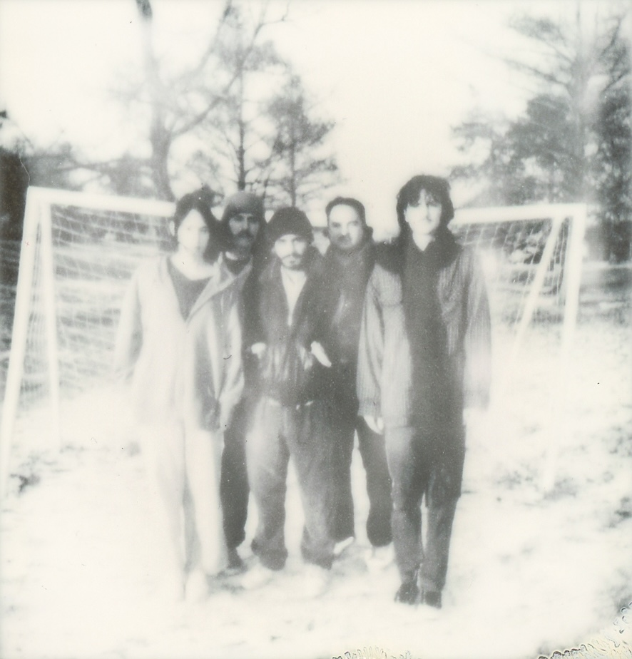
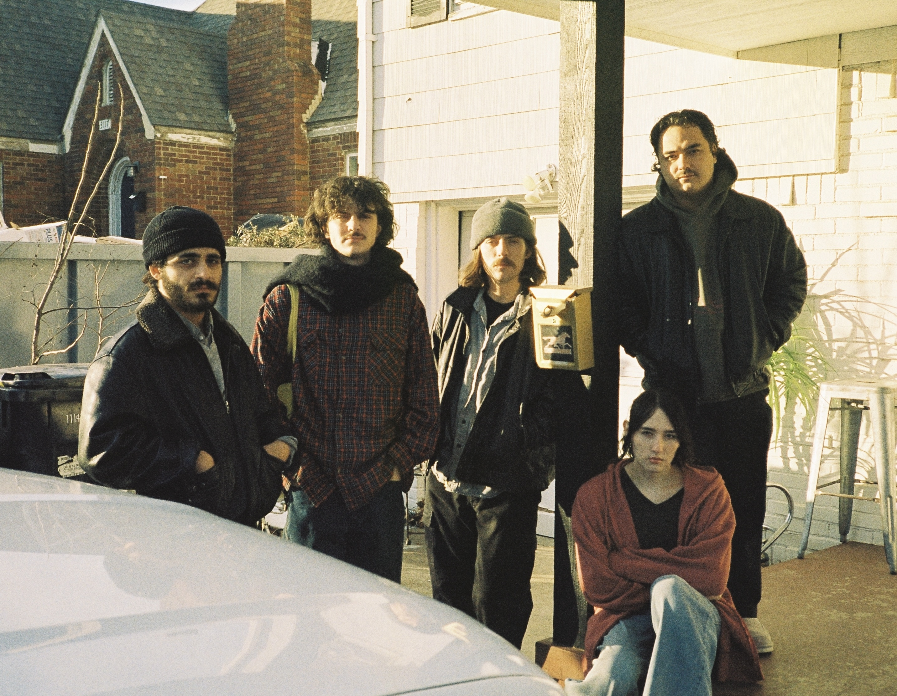
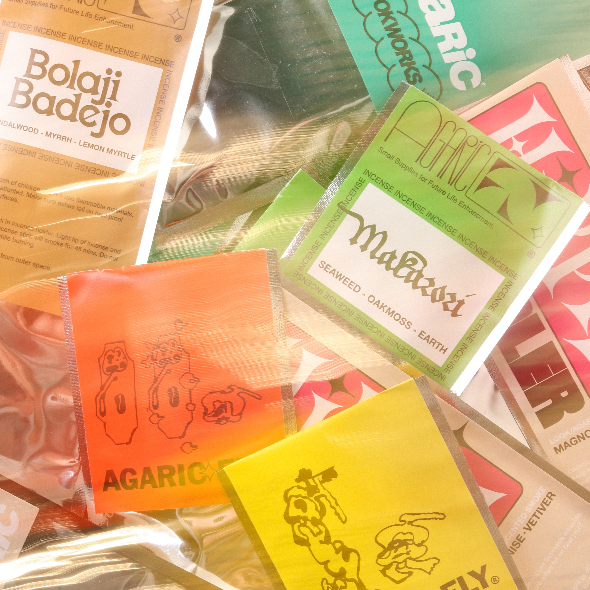
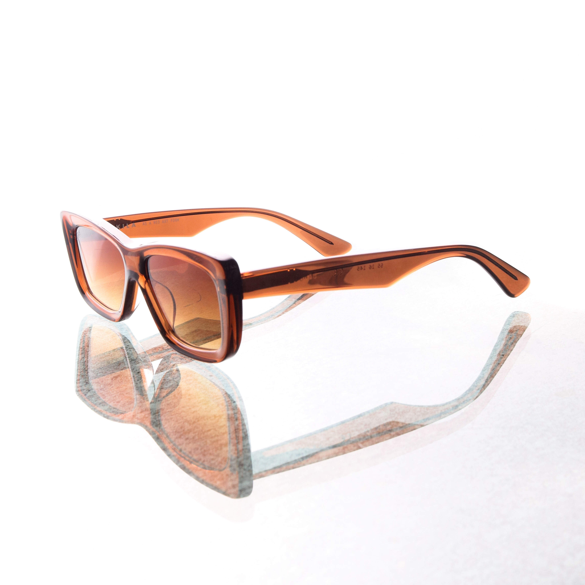
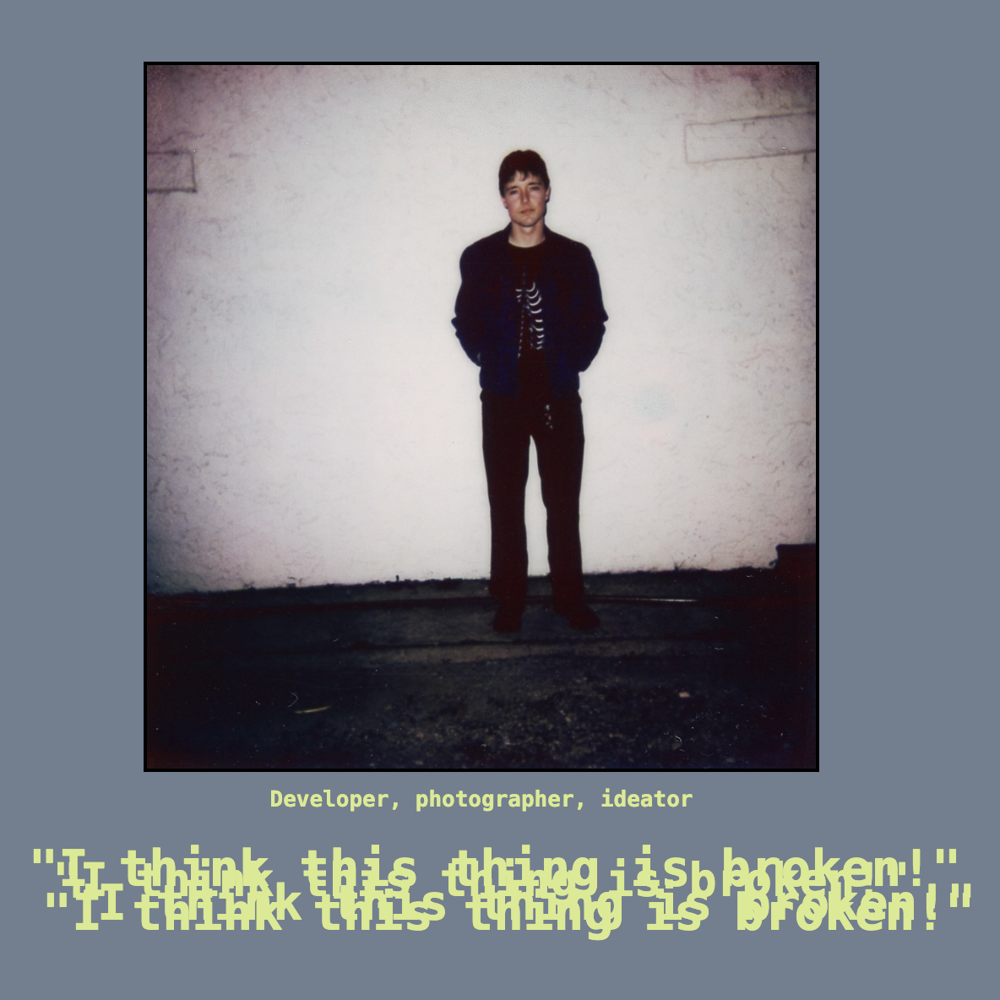

Photography for brands / artists
 In January 2024, I took some photos in a few different film formats to help promote a new EP project by Chelsea Days, a Neo-Psychedelic band in Oklahoma City.
BY.Everyone: Promo & E-Commerce
 For five years, I have been lucky to work in a freelance capacity for a retail boutique in OKC known as BY.Everyone. I've created promotional content, worked on e-commerce photography and inventory organization, and even directed special projects such as live musical performances and interviews.
My personal website
While this website is still a work-in-progress, I am unironically happy to list it on here as one of my ongoing projects. I have been wanting to learn more about coding, web design, and software development for a few years now. I hope to slowly improve and expand this website as I learn more.